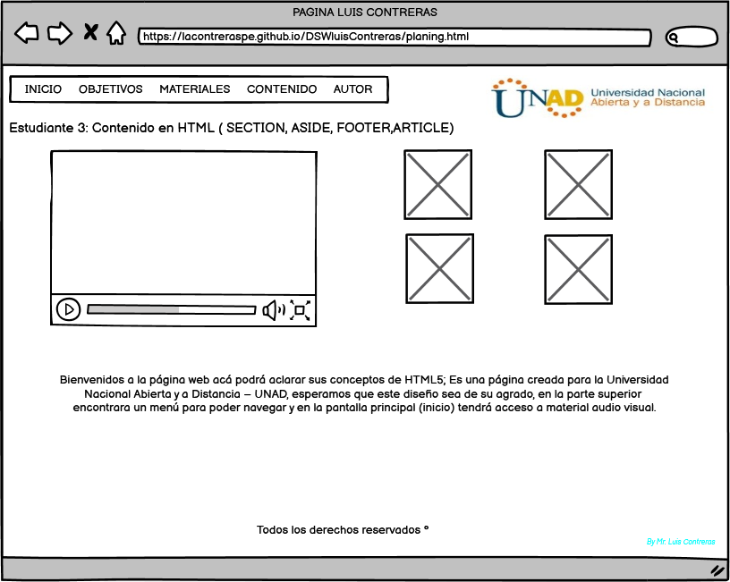

Bienvenidos, espero que el material aca esbozado sea de su agrado
Estudiante 3: Contenido en HTML ( SECTION, ASIDE, FOOTER,ARTICLE)
a) OBJETIVO GENERAL
Nuestro objetivo es ver y entender el Contenido en HTML ( SECTION, ASIDE, FOOTER, ARTICLE)
OBJETIVOS ESPECIFICOS
Que es "SECTION"
Que es "ASIDE"
Que es "FOOTER"
Que es "ARTICLE"
b) MATERIALES
Tutorial HTML5
c) CONTENIDO
Contenido De Lectura
Que es "SECTION"
Representa una sección genérica de un documento. Sirve para determinar qué contenido corresponde a qué parte de un esquema.
Que es "ASIDE"
Representa una sección de una página que consiste en contenido que está indirectamente relacionado con el contenido principal del documento. Estas secciones son a menudo representadas como barras laterales o como inserciones y contienen una explicación al margen como una definición de glosario, elementos relacionados indirectamente, como publicidad, la biografía del autor, o en aplicaciones web, la información de perfil o enlaces a blogs relacionados.
Que es "FOOTER"
Representa un pie de página para el contenido de sección más cercano o el elemento raíz de sección.
Que es "ARTICLE"
Representa una composición auto-contenida en un documento, página, una aplicación o en el sitio, que se destina a distribuir de forma independiente o reutilizable.
Copcentos tomados de MDN web docs
MAQUETACION
